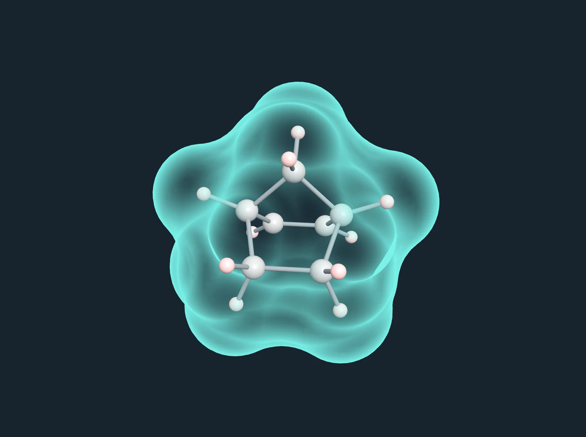

A molecular surface answers a geometric question about atoms and a solvent probe. Keep those choices explicit, and compare SAS with SES without confusing either with electron density.


1. Start with a manageable structure
Open bicyclic-c7h10.molden in EigenVista 0.10.3. Its 17 atoms make a quick first comparison; the surface needs their coordinates/radii, not the file's quantum fields. PDB/XYZ/mmCIF structures can use the same controls.
Choose View meshes and analyses to remove a sampled volume, and hide unrelated saved quantum meshes. Keep the atomic framework visible.
2. Generate the first SES
- Choose the Surfaces tab and expand Molecular surfaces.
- Choose Solvent excluded (SES), all source atoms, and Bondi / Mantina radii.
- Start with a 1.4 Å probe and 0.5 Å spacing. Name the surface and choose Generate molecular surface.
- Wait for completion and inspect the saved surface's scientific provenance. It should echo your kind, radii, probe and actual spacing.
Smaller spacing gives finer geometry. To obtain the illustrated finish, generate or regenerate explicitly at 0.15 Å after the first test succeeds. No automatic coarsening is used. Cancellation/error retains the earlier accepted mesh.
3. Compare SAS using the same inputs
Keep the SES, choose Create a new surface, and select Solvent accessible (SAS) with the same atoms, radii, probe and spacing. Give it a different name. Toggle visibility so you compare one surface at a time from the same camera.
SAS follows the probe center, while SES includes the probe-contact/reentrant molecular boundary. A difference is expected. It does not establish a charge distribution, functional pocket or interaction energy. Compare like-for-like settings before interpreting geometry differences.
4. Understand selected surfaces
Choose Current selection or a named set when inspecting a local object. The calculation treats only those atoms as an isolated object: omitted atoms cease to occlude the surface. It is not a window cut out of the full molecule's existing mesh.
For a large protein, first select/name the intended chain or ligand neighborhood. Your agent can resolve the source identities and prepare the set for you. A small selected surface is often a more useful first test than requesting an entire assembly at very fine spacing.

5. Reveal the interior and keep the result
Choose Ball and stick or Liquorice to avoid the coincident-contact interference of Van der Waals spheres with SES. Expand the saved surface and change its color or opacity: the view updates immediately, with no Apply button or mesh regeneration.
Use opacity or the X-ray/clipping surface shaders to reveal the framework. Choose the particular molecular surface as the shader target if you want other meshes untouched. Molecular AO continues to apply to atom/bond instances, not the SAS/SES mesh.
Save a new c7h10-shape-comparison.eigenvista and export the figure. Reopen it and confirm both cached shapes and their provenance load without regeneration. Camera and custom shader settings remain session choices, so keep the exported figure too.
If a radius or allocation is rejected
Some elements lack a value in a selected table. The app names the missing element; choose a suitable table or provide an explicit positive radius with defensible provenance. Do not silently omit it or substitute a display radius. Generation attempts the requested allocation without a preset memory ceiling. If allocation fails, choose an explicitly coarser spacing or smaller source selection and retry; the error does not silently change your settings.
Ask your agent instead
Using EigenVista 0.10.3, compare solvent-excluded and solvent-accessible surfaces for the complete C7H10 example. Use Bondi/Mantina radii, a 1.4 angstrom probe and 0.25 angstrom spacing. Keep both cached meshes, show one at a time from the same camera, apply the X-ray finish only to the SES, and save two images plus a new native document. Report the actual settings and any radius or memory errors.